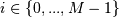

numpy.linalg.eig¶
- numpy.linalg.eig(a)[source]¶
Compute the eigenvalues and right eigenvectors of a square array.
Parameters : a : (..., M, M) array
Matrices for which the eigenvalues and right eigenvectors will be computed
Returns : w : (..., M) array
The eigenvalues, each repeated according to its multiplicity. The eigenvalues are not necessarily ordered. The resulting array will be always be of complex type. When a is real the resulting eigenvalues will be real (0 imaginary part) or occur in conjugate pairs
v : (..., M, M) array
The normalized (unit “length”) eigenvectors, such that the column v[:,i] is the eigenvector corresponding to the eigenvalue w[i].
Raises : LinAlgError
If the eigenvalue computation does not converge.
See also
Notes
Broadcasting rules apply, see the numpy.linalg documentation for details.
This is implemented using the _geev LAPACK routines which compute the eigenvalues and eigenvectors of general square arrays.
The number w is an eigenvalue of a if there exists a vector v such that dot(a,v) = w * v. Thus, the arrays a, w, and v satisfy the equations dot(a[:,:], v[:,i]) = w[i] * v[:,i] for .
The array v of eigenvectors may not be of maximum rank, that is, some of the columns may be linearly dependent, although round-off error may obscure that fact. If the eigenvalues are all different, then theoretically the eigenvectors are linearly independent. Likewise, the (complex-valued) matrix of eigenvectors v is unitary if the matrix a is normal, i.e., if dot(a, a.H) = dot(a.H, a), where a.H denotes the conjugate transpose of a.
Finally, it is emphasized that v consists of the right (as in right-hand side) eigenvectors of a. A vector y satisfying dot(y.T, a) = z * y.T for some number z is called a left eigenvector of a, and, in general, the left and right eigenvectors of a matrix are not necessarily the (perhaps conjugate) transposes of each other.
References
G. Strang, Linear Algebra and Its Applications, 2nd Ed., Orlando, FL, Academic Press, Inc., 1980, Various pp.
Examples
>>> from numpy import linalg as LA
(Almost) trivial example with real e-values and e-vectors.
>>> w, v = LA.eig(np.diag((1, 2, 3))) >>> w; v array([ 1., 2., 3.]) array([[ 1., 0., 0.], [ 0., 1., 0.], [ 0., 0., 1.]])
Real matrix possessing complex e-values and e-vectors; note that the e-values are complex conjugates of each other.
>>> w, v = LA.eig(np.array([[1, -1], [1, 1]])) >>> w; v array([ 1. + 1.j, 1. - 1.j]) array([[ 0.70710678+0.j , 0.70710678+0.j ], [ 0.00000000-0.70710678j, 0.00000000+0.70710678j]])
Complex-valued matrix with real e-values (but complex-valued e-vectors); note that a.conj().T = a, i.e., a is Hermitian.
>>> a = np.array([[1, 1j], [-1j, 1]]) >>> w, v = LA.eig(a) >>> w; v array([ 2.00000000e+00+0.j, 5.98651912e-36+0.j]) # i.e., {2, 0} array([[ 0.00000000+0.70710678j, 0.70710678+0.j ], [ 0.70710678+0.j , 0.00000000+0.70710678j]])
Be careful about round-off error!
>>> a = np.array([[1 + 1e-9, 0], [0, 1 - 1e-9]]) >>> # Theor. e-values are 1 +/- 1e-9 >>> w, v = LA.eig(a) >>> w; v array([ 1., 1.]) array([[ 1., 0.], [ 0., 1.]])